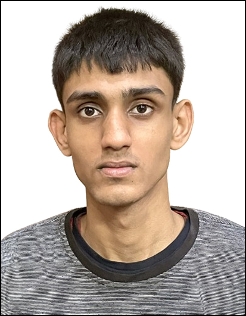

About Myself

I'm Ramrup Satpati, an undergraduate student at IIT Madras and a 2025 Campus Partner at Perplexity. My core passion lies in tech-driven innovation, interdisciplinary learning, and creating impactful solutions.
My LinkedIn Profile: Click Here
Core Expertise & Recognition:
- Holds 50+ certifications from global leaders including Microsoft, NVIDIA, and UNICEF, demonstrating strong technical depth and social awareness.
- Expertise spans Python, SQL, AI/ML, Data Science, and full-stack web development (Flask, MERN), alongside practical understanding of cybersecurity and UI/UX design.
- Experienced in leadership roles, including Backend Intern at Solidron Pvt. Ltd., and various coordination positions at Aspire Institute and IITM.
- Polyglot with fluency in six languages, enhancing communication and coordination skills.
- Professional Objective: To leverage technical expertise and problem-solving ability to build impactful solutions in software development and data-driven technologies.
🌱 I’m constantly evolving — blending engineering, analytics, and creativity to build solutions that matter, striving to leave every space better than I found it.